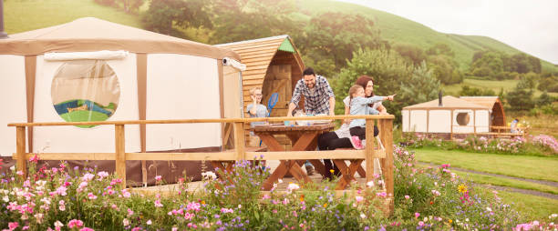
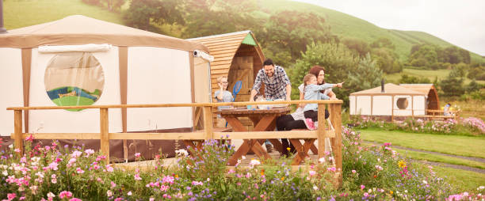
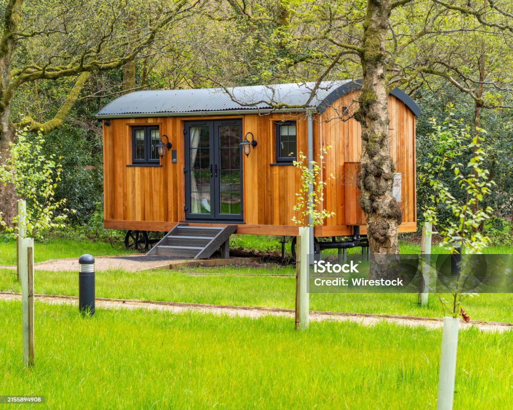
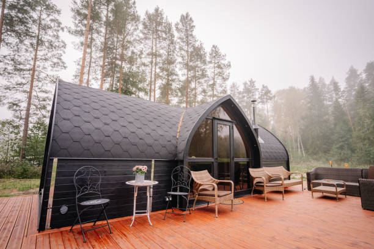
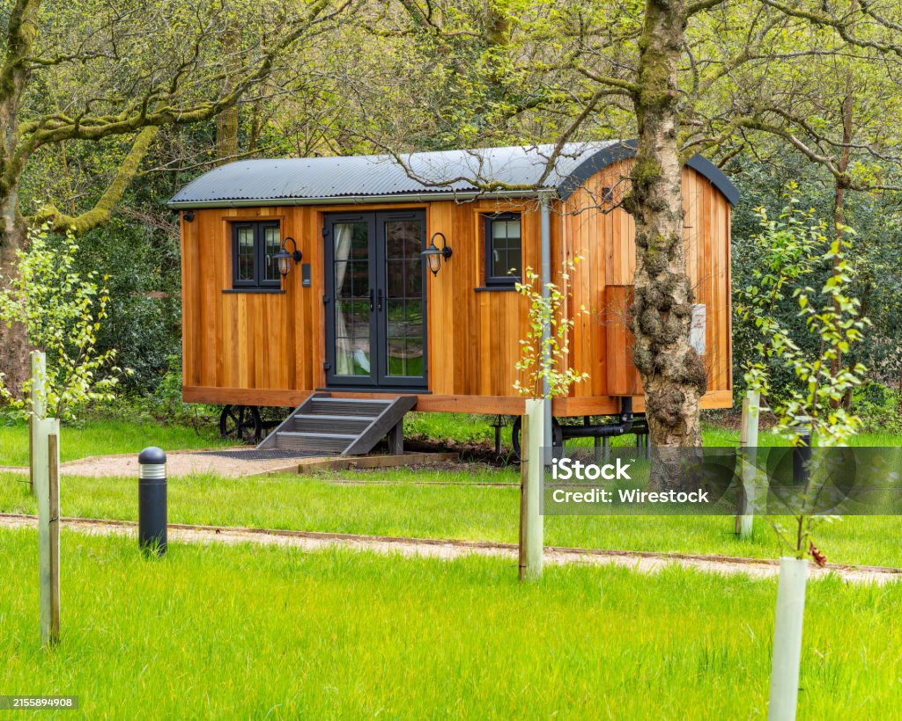
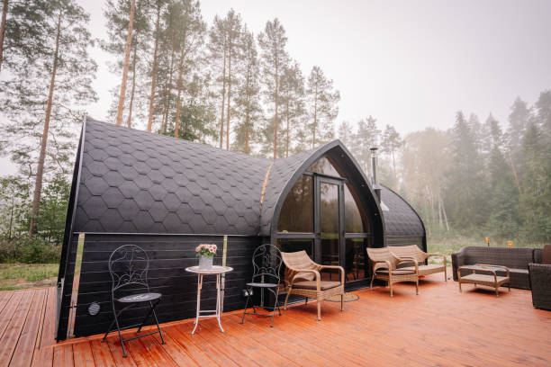

About Kavanagh’s Retreat
Located in the scenic village of Inniskeen, across from the Patrick Kavanagh Centre, this retreat offers guests an immersive experience into the world of the celebrated poet. Whether you’re here for literary inspiration, nature, or a unique glamping experience, Kavanagh’s Retreat has it all.

 

 


